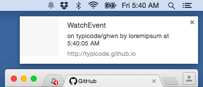
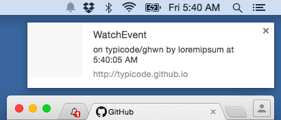

Desktop notifications for GitHub
 

Nothing to install, simply enter your GitHub username and never miss something (private repositories supported).
Pin this tab to receive notifications when you open your browser.
New events are fetched every minute.